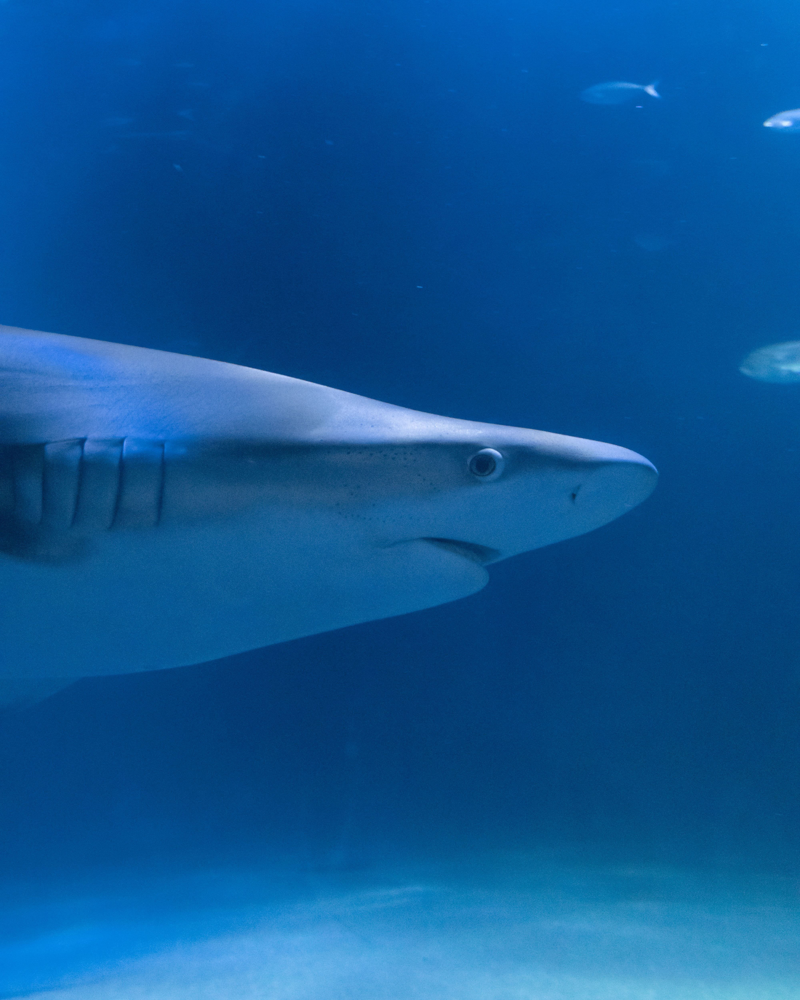

Five Facts About Great Whites
- The great white shark will feed on other sharks
- Humans are their only truly dangerous enemy besides orcas
- They can be playful
- There are no known records of a live aquarium specimen
- Females can take up to 33 years to have babies
Great white sharks are very misunderstood animals, courtesy of movies such as Jaws. They have forever been persecuted as man-eating monsters, but in reality don't even like interacting with humans. We are not their natural food source, and instead they prefer eating turtles, seals, and small fish. They will often also feed on smaller sharks, like the bull shark. They are incredibly smart, able to discern different shapes and colors.
